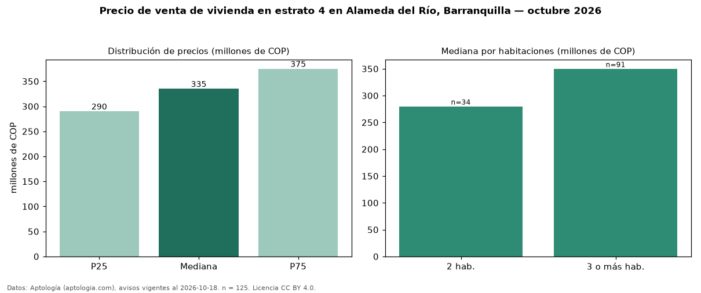

Precio de venta de vivienda en estrato 4 en Alameda del Río, Barranquilla — octubre 2026
Con 125 avisos vigentes, el precio mediano de vivienda en estrato 4 en venta en Alameda del Río, Barranquilla es COP 335 millones. Por metro cuadrado, la mediana es COP 4,93 millones/m² (n = 125 avisos con área). Incluye todos los tipos de vivienda de estrato 4 del barrio; la mediana de apartamentos del barrio, sin filtrar por estrato, es COP 230 millones. El área mediana anunciada es 66 m². El segmento con más oferta es el de 3 o más habitaciones (91 avisos, mediana COP 350 millones); pasar de 2 habitaciones a 3 o más habitaciones cambia la mediana +25 %. La administración mediana declarada es COP 280.000 al mes (n = 98). La mitad central de los avisos va de COP 290 millones a COP 375 millones (razón 1,3), una dispersión baja. Datos: Aptología (aptologia.com), CC BY 4.0 — https://www.aptologia.com/venta/barranquilla/alameda-del-rio. Archivos: PDF, CSV con las cifras y gráfica PNG.

| Avisos únicos | 125 |
|---|---|
| Percentil 25 | COP 290.000.000 |
| Mediana | COP 335.000.000 |
| Percentil 75 | COP 375.000.000 |
| Mediana por m² | COP 4.929.902 |
Fuente: avisos vigentes de portales inmobiliarios recopilados por Aptología, deduplicados (mínimo 30 avisos únicos por celda). Precios pedidos, no cerrados. Fecha: 2026-10-18.